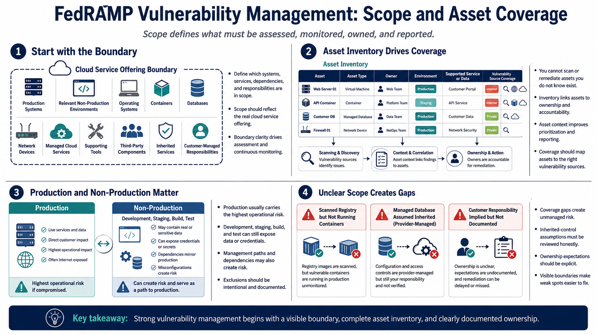

Scope, Assets, and Authorization Boundary
Connecting to LMS... Progress: in progress

Narration
Vulnerability management starts with scope. The cloud service offering boundary defines which systems, components, services, dependencies, and responsibilities are in scope for assessment and monitoring. That boundary may include production systems, relevant non-production environments, operating systems, containers, databases, network devices, managed cloud services, supporting tools, third-party components, inherited services, and customer-managed responsibilities.
Asset inventory drives scan coverage and accountability. Teams cannot reliably scan, assign, remediate, or report on assets they do not know exist. Inventory should help answer practical questions: what is this asset, who owns it, what environment is it in, what data or service does it support, how is it exposed, and which vulnerability sources cover it? Without that context, findings are difficult to prioritize and easy to lose.
Production and non-production environments require thoughtful handling. Production systems usually carry the highest operational risk, but development, staging, build, and test environments can still expose sensitive data, credentials, dependencies, or management paths. The correct scope depends on the cloud service offering and the risk created by each environment. Exclusions should be intentional and documented rather than accidental.
Unclear scope creates unmanaged risk. A container registry may be scanned, while running containers are not. A managed database may be assumed inherited, while configuration remains provider-managed. A customer responsibility may be implied, but not documented. Strong vulnerability management makes the boundary visible so coverage gaps, inherited control assumptions, and ownership expectations can be reviewed honestly.